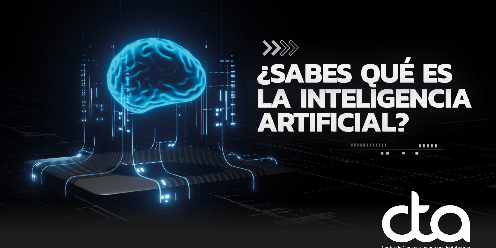

IA
Autor:Jeshua Rafael Chacón Molina

Definición:
La inteligencia artificial, o IA, es tecnología que permite que las computadoras simulen la inteligencia humana y las capacidades humanas de resolución de problemas.